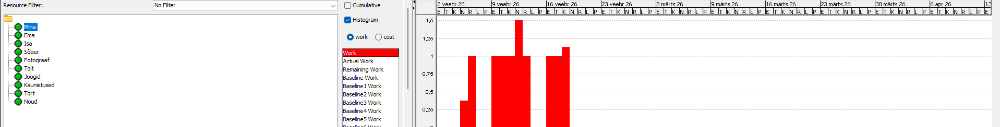
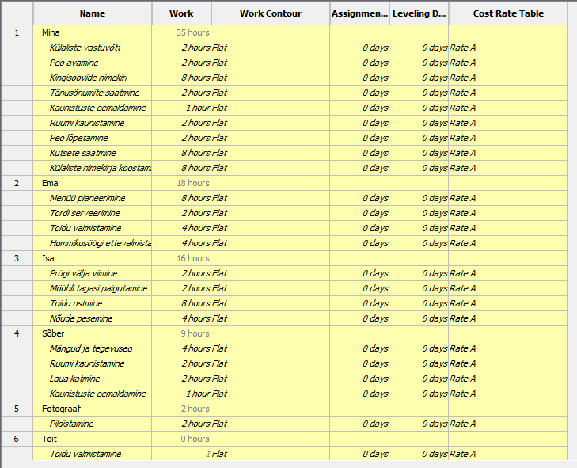

Gantt diagramm
ProjectLibre kasutab Gantt diagrammi, et kuvada projekti ajakava visuaalselt.
- Mine View → Gantt
- Vaata ülesannete ajakava

Ressursside vaade
Ressursside vaade näitab, kuidas töö on jaotatud.
- Mine View → Resource Usage
